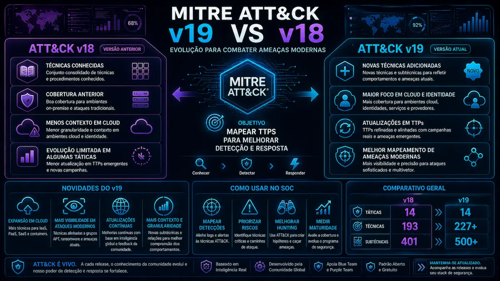

Neste artigo
- A divisao da Defense Evasion: Stealth e Defense Impairment
- Mudancas no Enterprise: novas tecnicas e refatoracoes
- IA generativa e engenharia social
- ICS, Mobile e Detection Strategies
- Threat Intelligence: novos atores e campanhas
- Migrando da v18 para a v19
- Impacto pratico para SOC, Threat Hunting e Detection Engineering
- Perguntas Frequentes
O MITRE ATT&CK v19 chega como uma das versoes mais estruturalmente significativas dos ultimos anos. Mais do que adicionar novas tecnicas, esta release repensa uma das taticas fundacionais do framework e introduz coberturas explicitas para IA generativa, engenharia social e ameacas cross-domain. Para quem mantem regras de deteccao, mapeamentos de cobertura ou playbooks de threat hunting, a v19 nao e apenas um update incremental: e um ponto de migracao.
A divisao da Defense Evasion: Stealth e Defense Impairment
A Defense Evasion historicamente acumulava comportamentos com intencoes muito distintas: desde mascaramento de processos ate a desativacao de EDRs. A v19 separa esses dois mundos:
Stealth
Camuflagem comportamental: o adversario opera sob as defesas existentes sem quebra-las. Inclui Living-off-the-Land, ofuscacao, masquerading de processos e abuso de binarios assinados.
Defense Impairment
Quebra ou desativacao ativa de controles: matar agentes EDR, adulterar logging, subverter cadeias de confianca, manipular firewalls e outras acoes que destroem capacidade defensiva.
Essa separacao reflete uma realidade que analistas de SOC ja viviam na pratica: detectar um rundll32 mascarado pede sinais comportamentais; detectar a parada de um servico de seguranca pede telemetria de integridade. Tratar os dois sob a mesma tatica diluia o sinal.
Mudancas no Enterprise: novas tecnicas e refatoracoes
Alem do split da Defense Evasion, o Enterprise recebeu refatoracoes importantes para reduzir sobreposicao e refletir comportamentos modernos.
Tecnicas reestruturadas
- T1685 - Disable or Modify Tools: novo parent que absorve T1562 e suas sub-tecnicas legadas.
- T1684 - Social Engineering: parent unificando T1656 (Impersonation) e T1672 (Email Spoofing), agora como sub-tecnicas.
- T1686.003 - Disable or Modify System Firewall: Windows Host Firewall: granularidade especifica para Windows.
- T1687 - Exploitation for Defense Impairment: explora vulnerabilidades para neutralizar controles.
Novas tecnicas de IA
- T1682 - Query Public AI Services: uso de LLMs publicos para reconhecimento, geracao de payloads e suporte operacional.
- T1683 - Generate Content, com sub-tecnicas:
- T1683.001 - Written Content (phishing, BEC, fake docs)
- T1683.002 - Audio-Visual Content (voice cloning, deepfakes)
O time do MITRE deixa claro que IA amplifica comportamentos existentes em vez de criar categorias inteiramente novas. A modelagem reflete isso: nao ha tatica "IA"; ha tecnicas que documentam como a IA e instrumentalizada.
IA generativa e engenharia social
A criacao do parent T1684 (Social Engineering) reconhece formalmente que manipulacao baseada em confianca nao e mais um anexo do phishing por email. Voice phishing (vishing) com clonagem em tempo real, abuso de help desks, comprometimento de plataformas colaborativas e impersonacao multi-canal agora tem cobertura explicita no Enterprise e no Mobile (T1660 atualizado para incluir clonagem de voz com IA em tempo real).
| Vetor | Antes da v19 | Depois da v19 |
|---|---|---|
| Phishing por email | T1566 + sub-tecnicas | T1566 (mantido) sob T1684 conceitualmente |
| Impersonacao | T1656 (top-level) | Sub-tecnica de T1684 |
| Email Spoofing | T1672 (top-level) | Sub-tecnica de T1684 |
| Vishing com IA | Sem cobertura granular | T1660 atualizado |
ICS, Mobile e Detection Strategies
O matrix ICS recebeu cinco reorganizacoes orientadas a granularidade operacional - critico para quem mapeia detecoes em ambientes OT, onde cada protocolo importa.
- T1693 - Modify Firmware: separado em System Firmware (T1693.001) e Module Firmware (T1693.002).
- T1695 - Block Communications: novo parent com Serial COM (.001), Ethernet (.002) e Wi-Fi (.003).
- T0846 - Remote System Discovery: ganhou Port Scan (.001), Broadcast Discovery (.002) e Multicast Discovery (.003).
- T0843 - Program Download: Download All (.001), Online Edit (.002), Program Append (.003).
- T1694 - Insecure Credentials: nova tecnica com Default Credentials (.001) e Hardcoded Credentials (.002).
Mobile: novos malwares e Detection Strategies
- VajraSpy (S9006): spyware Android com intercepcao de mensagens, exfiltracao de contatos/arquivos, ativacao de camera/microfone.
- DocSwap (S9005): malware Android atribuido ao Kimsuky, disfarcado de visualizador de documentos.
- Crocodilus (S9004): trojan bancario Android que sequestra Accessibility Services.
A v19 inicia o programa de Mobile Detection Strategies: orientacoes vendor-agnosticas e plataforma-especificas. Por exemplo, a T1398 (Boot or Logon Initialization Scripts) inclui:
- AN1739 (Android): alteracoes suspeitas em componentes de inicializacao ligados a scripts pos-boot.
- AN1740 (iOS): modificacoes nao autorizadas no
launchde apps sideloaded com auto-launch.
As Detection Strategies estao completas para Initial Access e Execution; o restante chega nas proximas releases.
Threat Intelligence: novos atores e campanhas
A v19 acompanha a evolucao do panorama geopolitico com adicoes substanciais de cyber threat intelligence:
Atividade iraniana
- Void Manticore (G1055): ator vinculado ao MOIS, com o ataque a Stryker Corporation em 2026 atribuido formalmente.
- MuddyWater (G0069): atualizado com MuddyViper (S9032), RustyWater (S9037) e Fooder (S9033).
Ameacas habilitadas por IA
- Anthropic AI-Orchestrated Campaign (C0062): cluster atribuido a estado (PRC, GTG-1002) usando Claude Code para espionagem autonoma multi-estagio - o primeiro caso documentado nessa escala.
- LAMEHUG (S9035): primeiro malware documentado consultando LLMs em operacoes ao vivo, associado ao APT28 (G0007).
Cobertura PRC e cross-domain
- MirrorFace (G1054) - subgrupo do menuPass.
- Operation AkaiRyu (C0060) - campanha associada.
- Volt Typhoon (G1017): atualizacao com novos comportamentos de initial access broker.
- Novos softwares: BRICKSTORM (S9015), BRUSHFIRE (S9011), SPAWNCHIMERA (S9024), PHASEJAM (S9014), DRYHOOK (S9013).
- WIRTE (G0090): grupo afiliado ao Hamas pivotando para operacoes disruptivas pos-outubro/2023.
- SameCoin (S9030): wiper cross-domain abrangendo Enterprise e Mobile.
- 2025 Poland Wiper Attacks (C0063): ICS + Enterprise, com DynoWiper (S9038) e LazyWiper (S9039) - primeiro wiper destrutivo contra infraestrutura de energia de membro da OTAN.
Supply chain e LATAM
- GlassWorm (S9010) e Shai-Hulud (S9008): comprometimentos do ecossistema npm em 2025.
- TruffleHog (S9009): ferramenta legitima weaponizada na cadeia de infeccao.
- APT-C-36 (G0099): crimeware commodity (HeartCrypt S9018, PureCrypter S9019) com forte presenca em LATAM.
- SystemBC (S9012), Evilginx2 (S9003), Qilin (S1242) com suporte Linux para alvos VMware ESXi.
Migrando da v18 para a v19
O MITRE publicou crosswalks oficiais para suavizar a transicao - eles sao o ponto de entrada para qualquer trabalho de remapeamento.
Baixar os crosswalks
O Defense Evasion split crosswalk (JSON e CSV) e o ICS sub-techniques crosswalk (JSON) listam IDs antigos, novos, taticas associadas e tipo de mudanca (mantida, virou sub-tecnica, fundida, revogada).
Inventariar dependencias internas
Levante onde IDs do ATT&CK aparecem: regras de SIEM, Sigma rules, dashboards, threat models, relatorios de purple team, mapeamentos D3FEND e MITRE Engage. Cada referencia para T1562 (e sub-tecnicas), T1656 e T1672 e candidata a atualizacao.
Atualizar gradualmente, validar cobertura
Aplique o crosswalk em batches por dominio (ICS, Enterprise, Mobile). Apos cada batch, regere heatmaps de cobertura e valide que as regras continuam acionando contra detecoes conhecidas. Para teams maduros, considere automatizar via ATT&CK Flow ou ferramentas equivalentes.
Impacto pratico para SOC, Threat Hunting e Detection Engineering
Para times operacionais, tres frentes merecem atencao imediata:
1. Engenharia de detecao
Regras que dependem de IDs T1562.* precisam migrar para T1685.* (e novas sub-tecnicas). Plataformas que sincronizam ATT&CK automaticamente fazem boa parte do trabalho - mas tags manuais em runbooks e wikis ficam orfas se nao houver auditoria.
2. Threat hunting
A separacao Stealth/Defense Impairment ajuda a estruturar hipoteses melhor: hunts focados em quietude (DNS tunneling, signed binary abuse) sao distintos de hunts focados em quebra (servicos de EDR parados, drivers BYOVD). Refatorar os hunt books segundo essa separacao gera ganho de sinal.
3. Threat intelligence e reporting
Reports executivos que mapeiam adversarios para ATT&CK precisam revisitar atribuicoes. Volt Typhoon, MuddyWater e MirrorFace ganharam cobertura nova - relatorios anteriores podem estar incompletos. Novos atores como Void Manticore e a campanha C0062 (orquestracao por IA) sao especialmente relevantes para setores criticos.
Precisa de apoio para mapear sua cobertura de detecao na v19, atualizar regras Sigma ou estruturar threat hunting alinhado ao novo split? Fale com o time da Inteligencia Brasil.
Fale com um especialistaPerguntas Frequentes
A tatica foi dividida em duas: Stealth (TA0005), focada em camuflagem comportamental sem quebrar defesas, e Defense Impairment (TA0112), focada em desativar ou subverter controles defensivos. T1562 e sub-tecnicas foram absorvidas pelo novo parent T1685.
T1682 (Query Public AI Services) e T1683 (Generate Content), com sub-tecnicas para conteudo escrito (T1683.001) e audiovisual (T1683.002). A T1660 do Mobile tambem foi atualizada para cobrir clonagem de voz em tempo real.
Sim, especialmente regras que referenciam IDs T1562.*, T1656 e T1672. Use os crosswalks oficiais do MITRE como base, valide em batches e regere heatmaps de cobertura para confirmar que nada ficou orfao.
Cinco tecnicas foram reorganizadas com sub-tecnicas para granularidade operacional, incluindo Block Communications por protocolo (Serial, Ethernet, Wi-Fi), Modify Firmware separado em sistema e modulo, e a nova T1694 (Insecure Credentials).
Entre os destaques: Void Manticore (G1055), MirrorFace (G1054), atualizacoes em MuddyWater, Volt Typhoon, APT28 e WIRTE, alem de novos softwares como LAMEHUG, BRICKSTORM, GlassWorm e Shai-Hulud.
Conclusao
A v19 do MITRE ATT&CK e a release mais densa em mudancas estruturais dos ultimos ciclos. A divisao da Defense Evasion responde a um problema real de granularidade; a entrada formal da IA e da engenharia social como temas de primeira classe acompanha o panorama de ameacas atual; e o conjunto de adicoes em ICS, Mobile e threat intelligence amplia o escopo do framework de forma significativa.
Para times de seguranca, o trabalho agora e migrar com disciplina: usar os crosswalks, atualizar regras e mapeamentos, refatorar hunts segundo a nova separacao Stealth vs Defense Impairment, e revisitar atribuicoes em reports de threat intelligence. Quem encara a transicao como oportunidade de melhorar engenharia de detecao - e nao apenas como exercicio de remapeamento - sai dessa versao com cobertura melhor do que entrou.